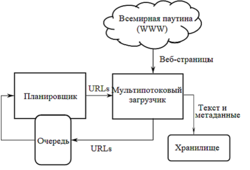
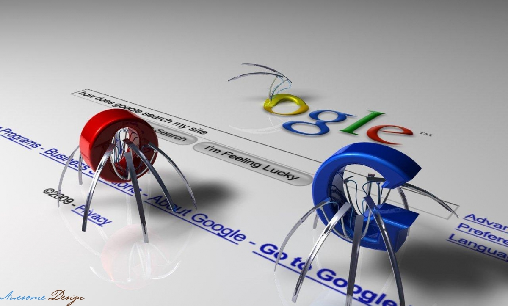
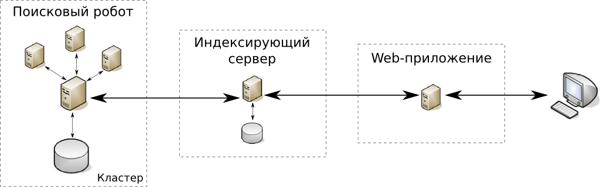

ПРИНЦИПЫ РАБОТЫ

Основные составляющие поисковой системы: поисковый робот, индексатор, поисковик.
Как правило системы работают поэтапно. Сначала поисковый робот получает контент, затем индексатор генерирует доступный для поиска индекс, и наконец, поисковик обеспечивает функциональность для поиска индексируемых данных. Чтобы обновить поисковую систему, этот цикл индексации выполняется повторно.
Поисковые системы работают, храня информацию о многих веб-страницах, которые они получают из HTML страниц. Поисковый робот или «краулер» (англ. Crawler) — программа, которая автоматически проходит по всем ссылкам, найденным на странице, и выделяет их. Краулер, основываясь на ссылках или исходя из заранее заданного списка адресов, осуществляет поиск новых документов, ещё не известных поисковой системе. Владелец сайта может исключить определённые страницы при помощи robots.txt, используя который можно запретить индексацию файлов, страниц или каталогов сайта.
Поисковая система анализирует содержание каждой страницы для дальнейшего индексирования. Слова могут быть извлечены из заголовков, текста страницы или специальных полей — метатегов. Индексатор — это модуль, который анализирует страницу, предварительно разбив её на части, применяя собственные лексические и морфологические алгоритмы. Все элементы веб-страницы вычленяются и анализируются отдельно. Данные о веб-страницах хранятся в индексной базе данных для использования в последующих запросах. Индекс позволяет быстро находить информацию по запросу пользователя. Ряд поисковых систем, подобных Google, хранят исходную страницу целиком или её часть, так называемый кэш, а также различную информацию о веб-странице. Другие системы, подобные системе AltaVista, хранят каждое слово каждой найденной страницы. Использование кэша помогает ускорить извлечение информации с уже посещённых страниц. Кэшированные страницы всегда содержат тот текст, который пользователь задал в поисковом запросе. Это может быть полезно в том случае, когда веб-страница обновилась, то есть уже не содержит текст запроса пользователя, а страница в кэше ещё старая. Эта ситуация связана с потерей ссылок (англ. linkrot) и дружественным по отношению к пользователю (юзабилити) подходом Google. Это предполагает выдачу из кэша коротких фрагментов текста, содержащих текст запроса. Действует принцип наименьшего удивления, пользователь обычно ожидает увидеть искомые слова в текстах полученных страниц (User expectations). Кроме того, что использование кэшированных страниц ускоряет поиск, страницы в кэше могут содержать такую информацию, которая уже нигде более не доступна.
Поисковик работает с выходными файлами, полученными от индексатора. Поисковик принимает пользовательские запросы, обрабатывает их при помощи индекса и возвращает результаты поиска.
Когда пользователь вводит запрос в поисковую систему (обычно при помощи ключевых слов), система проверяет свой индекс и выдаёт список наиболее подходящих веб-страниц (отсортированный по какому-либо критерию), обычно с краткой аннотацией, содержащей заголовок документа и иногда части текста. Поисковый индекс строится по специальной методике на основе информации, извлечённой из веб-страниц. С 2007 года поисковик Google позволяет искать с учётом времени, создания искомых документов (вызов меню «Инструменты поиска» и указание временного диапазона). Большинство поисковых систем поддерживает использование в запросах булевых операторов И, ИЛИ, НЕ, что позволяет уточнить или расширить список искомых ключевых слов. При этом система будет искать слова или фразы точно так, как было введено. В некоторых поисковых системах есть возможность приближённого поиска, в этом случае пользователи расширяют область поиска, указывая расстояние до ключевых слов. Есть также концептуальный поиск, при котором используется статистический анализ употребления искомых слов и фраз в текстах веб-страниц. Эти системы позволяют составлять запросы на естественном языке. Примером такой поисковой системы является сайт ask.com.
Полезность поисковой системы зависит от релевантности найденных ею страниц. Хоть миллионы веб-страниц и могут включать некое слово или фразу, но одни из них могут быть более релевантны, популярны или авторитетны, чем другие. Большинство поисковых систем использует методы ранжирования, чтобы вывести в начало списка «лучшие» результаты. Поисковые системы решают, какие страницы более релевантны, и в каком порядке должны быть показаны результаты, по-разному. Методы поиска, как и сам Интернет со временем меняются. Так появились два основных типа поисковых систем: системы предопределенных и иерархически упорядоченных ключевых слов и системы, в которых генерируетсяинвертированный индекс на основе анализа текста.
Большинство поисковых систем являются коммерческими предприятиями, которые получают прибыль за счёт рекламы, в некоторых поисковиках можно купить за отдельную плату первые места в выдаче для заданных ключевых слов. Те поисковые системы, которые не берут денег за порядок выдачи результатов, зарабатывают на контекстной рекламе, при этом рекламные сообщения соответствуют запросу пользователя. Такая реклама выводится на странице со списком результатов поиска, и поисковики зарабатывают при каждом клике пользователя на рекламные сообщения.